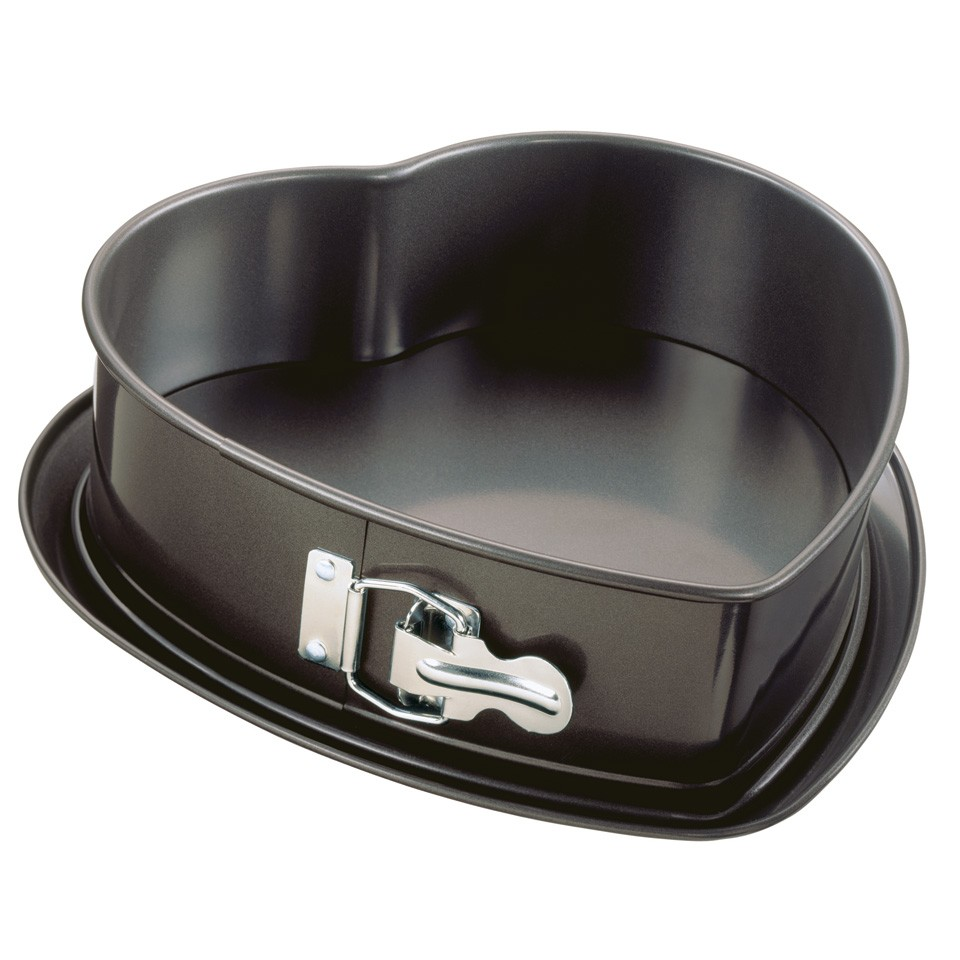

Recepten
Van taarten tot salades, van kwark tot kapsalon
Tomatenbrood
Lekker brood met de vorm van een pudding
Uit de oude doos
Benodigdheden
oven, kom, broodvorm.
Ingrediënten
meel, zongedroogde tomaten, tomatenpuree, gesnipperde ui, gist, melk, ei, olie.
Zo wordt het lekker:
gooi het meel, de in melk opgeloste gist en het ei in een kom.
Tomatenpuree erdoor en de olie. flink kneden, twee uur laten reizen,
ui en tomaat erdoor en dan 2 uur in de oven op niet te hoge stand.
